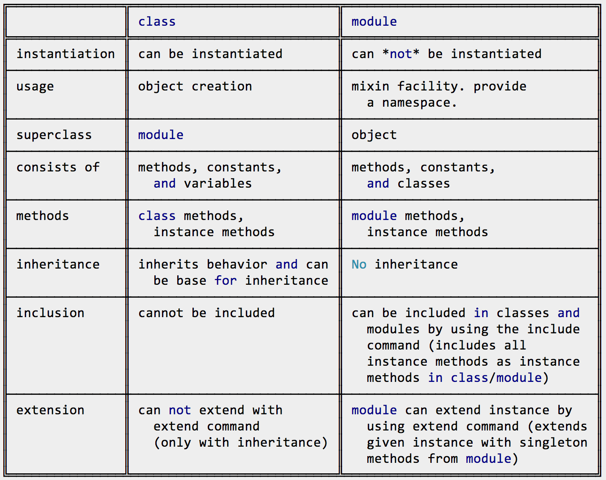

Week 6 Technical Blog
Lets start off by simply defining the two statements above. A class can be defined as “constituent member definer which allows for it’s instance variables to have a state and behavior” A module is defined as simply “a collection of methods and constants”. Now that we have our super intriguing definitions, lets dive in a little deeper.
Ruby is an object-oriented programming language, as we’ve all come to learn, which means it manipulates and accesses constructs known as objects. These objects then have methods and attributes (data). A class therefore is way of organizing and creating objects, which act upon alike methods and data. It will contain methods, class variables, and instance variables.
Modules and classes are very similar. To begin with a module is used, much like a class, to organize data. While classes are concerned with variables and methods that characterize the class, modules regroup all the information that is deemed as relatable.
Since my explanations are a little shitty, for I am still getting comfortable with the difference between the two, I have provided a chart to help clarify the differences between the two.
Check out some of my work.
SWEBBY